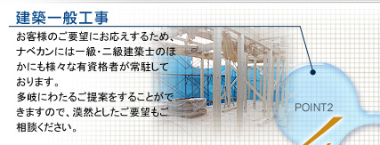
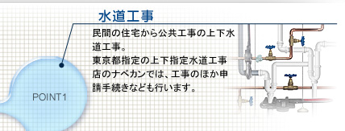
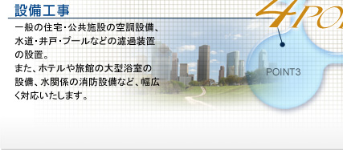
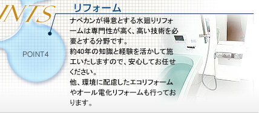
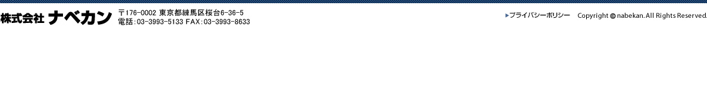

- 2021-11-03
- 施工事例
-
施工事例更新しました
詳しくは最新施工事例をご覧ください。 - 2021-10-13
- 社長ブログ
-
社長ブログ更新しました
詳しくは社長ブログをご覧ください。 - 2021-09-27
- 施工事例
-
施工事例更新しました
詳しくは最新施工事例をご覧ください。 - 2021-09-27
- 社長ブログ
-
屋根にまつわる飛び込み営業の御注意
詳しくは社長ブログをご覧ください。 - 2021-09-21
- 施工事例
-
最新施工事例更新致しました。
詳しくは施工事例をご覧ください。 - 2021-09-15
-
リフォームローン取扱のお知らせと金利について
詳しくはお知らせをご覧ください。 - 2021-09-07
-
PayPay決済を当面継続のお知らせ
2021年10月1日以降もPayPay決済を当面継続いたします。
詳しくは社長ブログをご覧ください。 - 2021-07-14
- お知らせ
-
夏季休暇のお知らせ
誠に勝手ながら下記の期間を夏季休暇休業とさせていただきます。
2021年8月7日～2021年8月15日
詳しくはお知らせ・イベント情報をご覧ください。 - 2021-07-14
-
休業日のお知らせ
誠に勝手ながら下記の日程を休業日とさせていただきます。
2021年7月24日
詳しくはお知らせをご覧ください。 - 2021-06-24
-
22卒・新卒採用情報
「建築リフォーム工事担当」「設備工事現場監督（現場代理人）」「設備工事作業スタッフ（配管工を含む）」の募集要項を掲載しました。 - 2021-06-24
-
品質方針を掲載しました
概要・沿革ページをご覧ください。 - 2021-04-28
-
休業日のお知らせ
誠に勝手ながら下記の日程を休業日とさせていただきます。
2021年5月1日
詳しくはお知らせをご覧ください。 - 2021-02-10
-
休業日のお知らせ
誠に勝手ながら下記の日程を休業日とさせていただきます。
2021年2月22日
詳しくはお知らせをご覧ください。 - 2020-12-28
-
年末年始休業のお知らせ
誠に勝手ながら下記の期間を年末年始休業とさせていただきます。
2020年12月30日～2021年1月6日
詳しくはお知らせをご覧ください。 - 2020-11-18
-

「オンライン打合わせサービス」をスタートしました。 ZOOM、Teams、LINEを使って安全・安心にご相談いただけます。 - 2020-10-01
-
臨時休業のお知らせ
誠に勝手ながら下記の期間を臨時休業とさせていただきます。
2020年10月31日～2020年11月3日
詳しくはお知らせをご覧ください。 - 2020-08-03
-
夏季休暇のお知らせ
誠に勝手ながら下記の期間を夏季休暇休業とさせていただきます。
2020年8月9日～2020年8月16日
詳しくはお知らせ・イベント情報をご覧ください。 - 2020-06-24
-
新型コロナウイルス抗体検査の結果「受診者全員陰性」
6月19日に新型コロナウイルス抗体検査を社員全員を対象に行い、全員陰性でしたのでお知らせします。 当日の詳しい様子は社長ブログをご覧ください。 - 2020-04-30
-
ゴールデンウィーク期間中の営業日のお知らせ
誠に勝手ながら下記の期間を休業とさせていただきます。
2020年5月2日～2020年5月6日
詳しくはお知らせをご覧ください。 - 2020-04-24
-
緊急事態宣言発令に伴う当社の対応について
2020年4月7日に政府から発令された緊急事態宣言発令に伴う当社の対応についてご案内いたします。 詳しくはお知らせをご覧ください。

|  |  |
|  |  |
